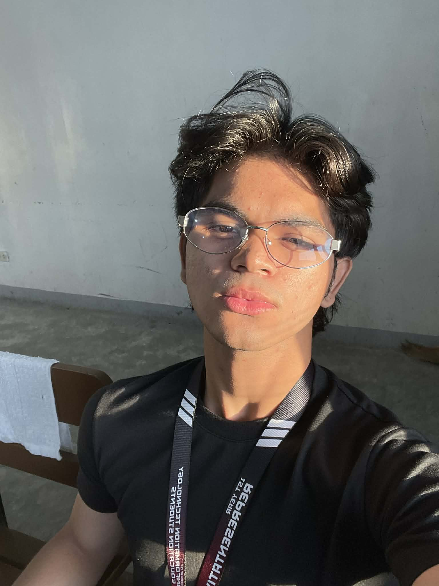

Authors Page & About Page Developer
Hi! I'm Germel, but you can call me "Rm", a 19-year-old from Taguig City who believes strongly in self-improvement and personal growth. I always push myself to become better every day, even through small progress.
I enjoy going to the gym to build discipline and mental strength. Playing guitar helps me relax and express emotions, while watching anime inspires me through creative stories and meaningful life lessons.
I am hardworking and goal-driven. Once I set a goal, I pursue it with consistency and dedication. I believe success is built through daily effort, strong habits, and perseverance.
I also value my alone time because it helps me think clearly and understand myself better. For me, life is about growth, passion, and becoming better step by step.